14 jeitos de juntar apresentador e conteúdo, 7 em 16:9 e 7 em 9:16. Cada um com exemplo real e um comando para montar.
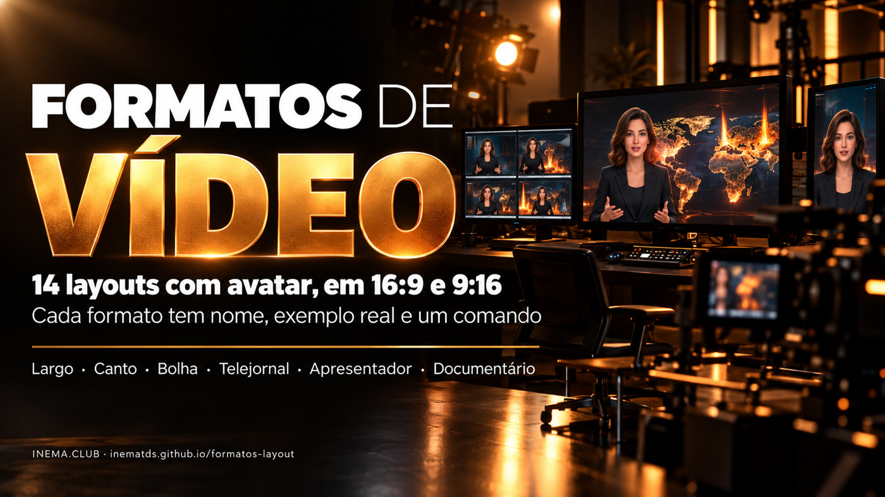
O formatos-layout é um catálogo de formatos de vídeo para quem grava com um apresentador (avatar) e mostra conteúdo junto: mapa, gráfico, print ou foto. Cada formato tem um nome fixo, como Largo, Bolha ou Telejornal. Assim dá para pedir "monta no Bolha 9:16" sem explicar o layout de novo. Ele traz um script que monta o vídeo final a partir de dois arquivos, o vídeo do conteúdo e o vídeo do apresentador. Para usar, basta ter o ffmpeg e o Python instalados.
Até aqui cada projeto tinha o próprio layout escondido no código. Agora os formatos ficam num lugar só, com nome, exemplo e comando.
Largo, Canto, Bolha, Telejornal, Dividido, Apresentador, Faixa, Viral e Documentário. O nome vira o pedido.
Cada formato tem um clipe de 10 a 16 segundos montado com um vídeo de verdade (Queimadas na Amazônia, 15/10/2026).
compor.sh monta qualquer formato só com ffmpeg, sem GPU e sem gravar o avatar de novo.
Para YouTube, aula e explicativo longo. Clique para assistir ao exemplo.
Conteúdo nos 2/3 da esquerda e o apresentador numa coluna à direita, com divisória âmbar.
Explicativo com muito gráfico; o rosto sempre visível.
Conteúdo em tela cheia e o rosto num quadro âmbar no canto de baixo.
Quando o visual é a estrela (mapa 3D, demo de tela).
Conteúdo em tela cheia e o rosto num círculo com aro âmbar.
Igual ao Canto, com visual mais leve.
Conteúdo em tela cheia; o apresentador ocupa a tela inteira nos trechos escolhidos.
Abertura e fechamento olho no olho, conteúdo inteiro no meio.
Metade conteúdo, metade apresentador, lado a lado.
Conversa, comparação, peso igual entre fala e conteúdo.
O apresentador domina a tela e o conteúdo entra num cartão à esquerda.
Opinião e recado pessoal; o conteúdo é só apoio.
Só o conteúdo com a voz por cima; o apresentador aparece nos últimos segundos.
Narrativa; o rosto só no fechamento (CTA).
Não existe Viral em 16:9. Pela regra do kit de design INEMA, o estilo viral é só para vídeo vertical.
Para reel, short e TikTok.
Conteúdo em cima e o apresentador numa faixa embaixo.
Reel explicativo, rosto o tempo todo.
Conteúdo em tela cheia e o rosto num quadro âmbar embaixo à direita.
Reel em que o visual manda.
Conteúdo em tela cheia e o rosto num círculo com aro âmbar.
Igual ao Canto, mais leve.
Conteúdo em tela cheia; o apresentador toma a tela nos trechos escolhidos.
Gancho e CTA com o rosto.
O apresentador grande embaixo e o conteúdo num cartão quadrado em cima.
Comentário pessoal sobre um dado.
Cortes secos a cada 2 s entre conteúdo, apresentador e close. Fecha no apresentador.
Retenção alta. O viral completo (carimbos, legenda) é o perfil viral do explicavideos.
Só o conteúdo com a voz; o apresentador aparece nos últimos segundos.
Reel narrado, rosto só no CTA.
Uma imagem real de cada formato. Nos formatos que alternam, a imagem mostra os dois momentos: conteúdo à esquerda, avatar à direita.
| Imagem | Formato | Onde o avatar aparece | Tamanho | Quando aparece |
|---|---|---|---|---|
| 16:9 | ||||
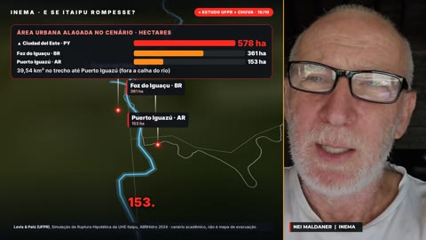 | Largolargo | coluna à direita, ao lado do conteúdo | 640×1080 (1/3 da tela) | o vídeo todo |
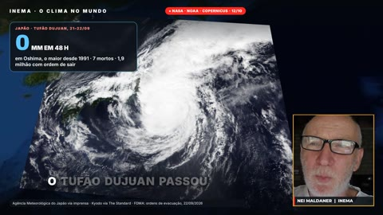 | Cantocanto | quadro âmbar no canto de baixo à direita, sobre o conteúdo | 400×453 | o vídeo todo |
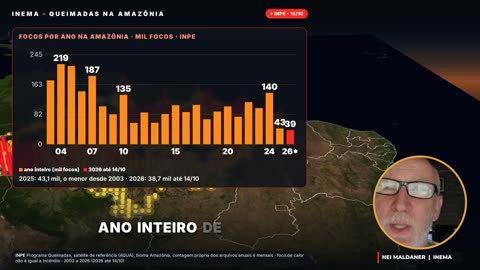 | Bolhabolha | círculo com aro âmbar no canto de baixo à direita | Ø 360 px | o vídeo todo |
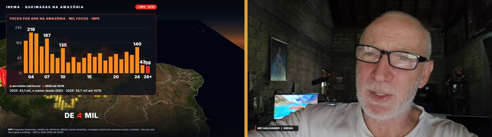 | Telejornaltelejornal | tela inteira, no lugar do conteúdo | 1920×1080 | só nos trechos escolhidos (padrão: 4 s no início e 5 s no fim) |
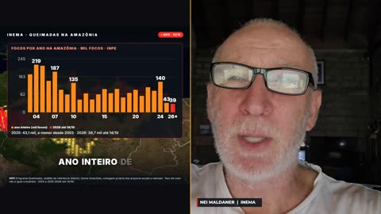 | Divididodividido | metade direita da tela | 960×1080 (1/2) | o vídeo todo |
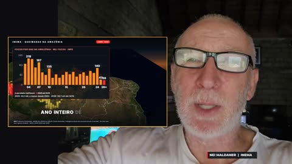 | Apresentadorapresentador | tela inteira ao fundo, deslocado à direita; conteúdo num cartão à esquerda | 1920×1080 (cartão 1040×585) | o vídeo todo |
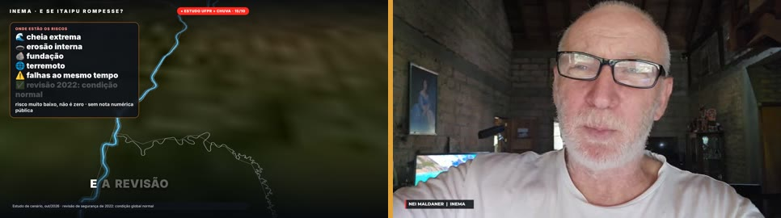 | Documentáriodocumentario | tela inteira, só no fechamento | 1920×1080 | só nos últimos segundos (padrão 6 s, --fim) |
| 9:16 | ||||
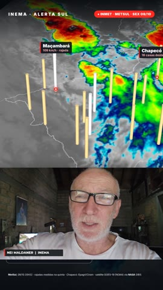 | Faixafaixa | faixa horizontal na parte de baixo, abaixo do conteúdo | 1080×608 | o vídeo todo |
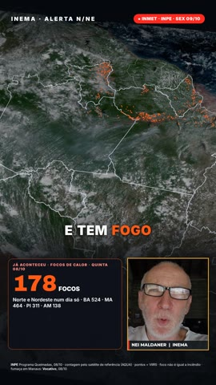 | Cantocanto | quadro âmbar embaixo à direita, sobre o conteúdo | 400×453 | o vídeo todo |
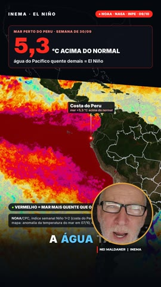 | Bolhabolha | círculo com aro âmbar embaixo à direita | Ø 400 px | o vídeo todo |
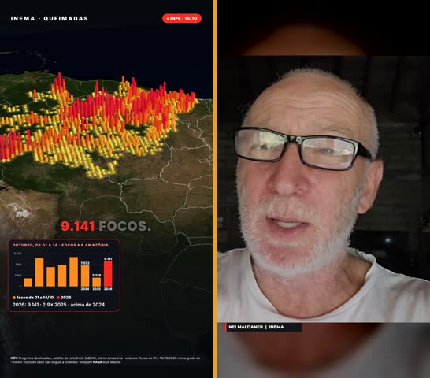 | Telejornaltelejornal | tela inteira (rosto centrado sobre fundo desfocado) | 1080×1920 | só nos trechos escolhidos (padrão: 4 s no início e 5 s no fim) |
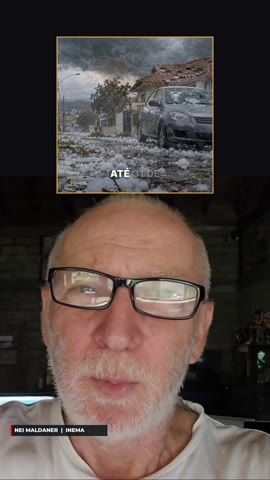 | Apresentadorapresentador | metade de baixo, grande; conteúdo num cartão quadrado em cima | 1080×1215 (cartão 620×620) | o vídeo todo |
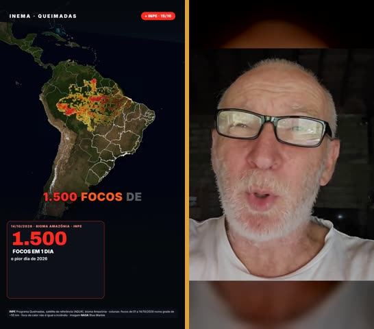 | Viralviral | tela inteira, alternando com o conteúdo (normal e close) | 1080×1920 | a cada 2 s (conteúdo → avatar → conteúdo → close); os últimos 5 s inteiros |
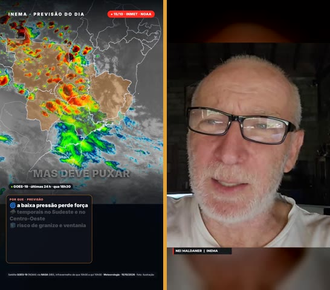 | Documentáriodocumentario | tela inteira, só no fechamento | 1080×1920 | só nos últimos segundos (padrão 6 s, --fim) |
Levantamento no código dos projetos de vídeo do INEMA (15/10/2026). Com *, uma variante que só existe naquele projeto e ainda não tem nome no catálogo.
| Projeto | Aspecto | Formatos | Como usa |
|---|---|---|---|
| explicavideos | 16:9 · 9:16 | Canto · Dividido · Faixa · Aula* · Meia tela* | Aula 16:9: rosto pequeno (406×228) no canto de cima à direita*. Viral 16:9: Canto, que cresce para Dividido nos trechos de rosto. 9:16 simples: Faixa. 9:16 viral: avatar na metade de baixo*; com avatar_916: pip vira Canto. |
| refazvideo | 16:9 · 9:16 | os mesmos do explicavideos | Usa o motor do explicavideos (aula ou viral). |
| eventosextremospub | 9:16 · 16:9 | Faixa · Canto | 9:16: Faixa ou Canto (LAYOUT=faixa / canto). 16:9 com avatar: Canto, no estilo do explicavideos viral (decisão de 15/10/2026); o Largo saiu de uso. |
| reel7etapas (r7e) | 9:16 | Canto · Apresentador · Faixa · Bolha · Invertido* | Padrão abre: avatar aberto na capa e depois Canto. quadro ≈ Apresentador, dividido ≈ Faixa, circulo ≈ Bolha centralizada, invertido: avatar em cima e imagem embaixo*. |
| finviral · saudeviral · advviral | 9:16 · 16:9 | Faixa → Canto · Pergunta* · Canto | Mesmo motor nos três. 9:16: Faixa no gancho, depois Canto; na pergunta o avatar cresce para 1080×600 no meio*. 16:9 (longo do fim de semana): Canto no alto à direita. |
| promoavatar · promoavatar2 · promoavatar3 | 9:16 | Faixa · Canto · Empilhado* | empilhado: 3 faixas, avatar no meio*. diptico: imagem em cima e avatar embaixo, meio a meio (≈ Faixa). imagem-plena: Canto no alto à direita. |
| reelcomenta | 9:16 | Canto | O reel original em tela cheia e o avatar no quadro âmbar embaixo à direita. |
| docflow | 16:9 | Telejornal · Documentário | Estilo historia-apresentador: o avatar toma a tela e alterna com os visuais (Telejornal). Os outros estilos são só voz sobre imagens, sem rosto. |
| makeshorts | 9:16 | Faixa | Tema em cima e rosto ou avatar embaixo, meio a meio. O avatar é opcional (MS_AVATAR=heygen). |
| reel-edita-inematds | 9:16 | Viral | Rosto gravado de verdade (não avatar): tela cheia, PiP no canto esquerdo ou tela dividida, conforme o momento. |
| ugc-agente | 9:16 | Personagem* | Personagem de IA (Kling + lipsync) ocupa o vídeo inteiro; não é o Nei e não há conteúdo à parte*. |
| cardshorts · videos-explicativos · video-explicativo · aventurasinemavideo · timesmkt3 | 9:16 · 16:9 · 1:1 | Documentário (sem rosto) | Sem avatar: só a voz (Nei clonado ou TTS) sobre cards, cenas animadas, fotos ou anúncios. |
O conteúdo e o apresentador são gravados separados. O formato só decide como os dois aparecem juntos.
Nada de GPU nem de serviço pago. Roda em Linux ou macOS.
Faz toda a montagem.
# Ubuntu/Debian sudo apt install ffmpeg
Faz as contas de tempo e a máscara da Bolha.
pip install pillowO conteúdo já no aspecto final (1920×1080 ou 1080×1920) e o apresentador em 16:9 com a voz.
# ex.: avatar do estúdio HeyGen
cena.mp4 avatar.mp4Os comandos abaixo são os mesmos que geraram os exemplos desta página.
Um script e uma pasta de apoio.
git clone https://github.com/inematds/formatos-layout cd formatos-layout
Veja a lista acima ou o FORMATOS.md. O nome vai em minúsculas e sem acento.
# 16x9: largo canto bolha telejornal dividido apresentador documentario # 9x16: faixa canto bolha telejornal apresentador viral documentario ./compor.sh --help
Informe o formato, o aspecto, os dois vídeos e o arquivo de saída.
./compor.sh --formato bolha --aspecto 16x9 \
--cena cena.mp4 --avatar avatar.mp4 --saida video-bolha.mp4
No Telejornal você escolhe quando o apresentador toma a tela. No Documentário, quantos segundos ele aparece no fim.
./compor.sh --formato telejornal --aspecto 9x16 --cena c.mp4 --avatar a.mp4 \ --saida tj.mp4 --trechos "0-3,25-28,40-46" ./compor.sh --formato documentario --aspecto 16x9 --cena c.mp4 --avatar a.mp4 \ --saida doc.mp4 --fim 8
--ss/--t cortam um pedaço; MUSICA põe trilha baixa que abaixa sob a voz; --nome troca a plaquinha; AV_CX/AV_CY dizem onde fica o rosto no vídeo do apresentador.
MUSICA=trilha.mp3 AV_CX=1110 ./compor.sh --formato canto --aspecto 9x16 \
--cena c.mp4 --avatar a.mp4 --saida reel.mp4 --ss 8 --t 10 --nome "ANA | INEMA"
O que existe hoje e o que vem depois.